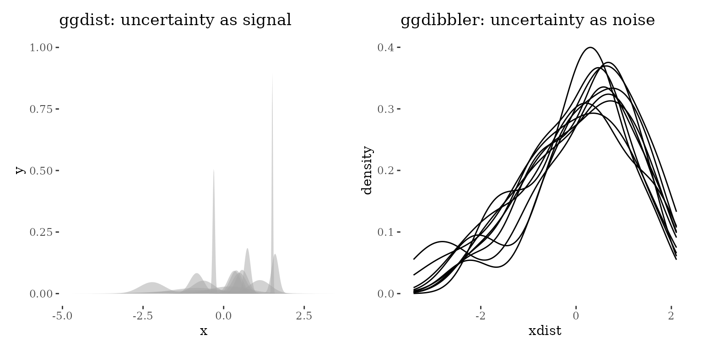
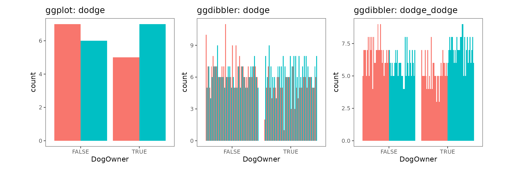
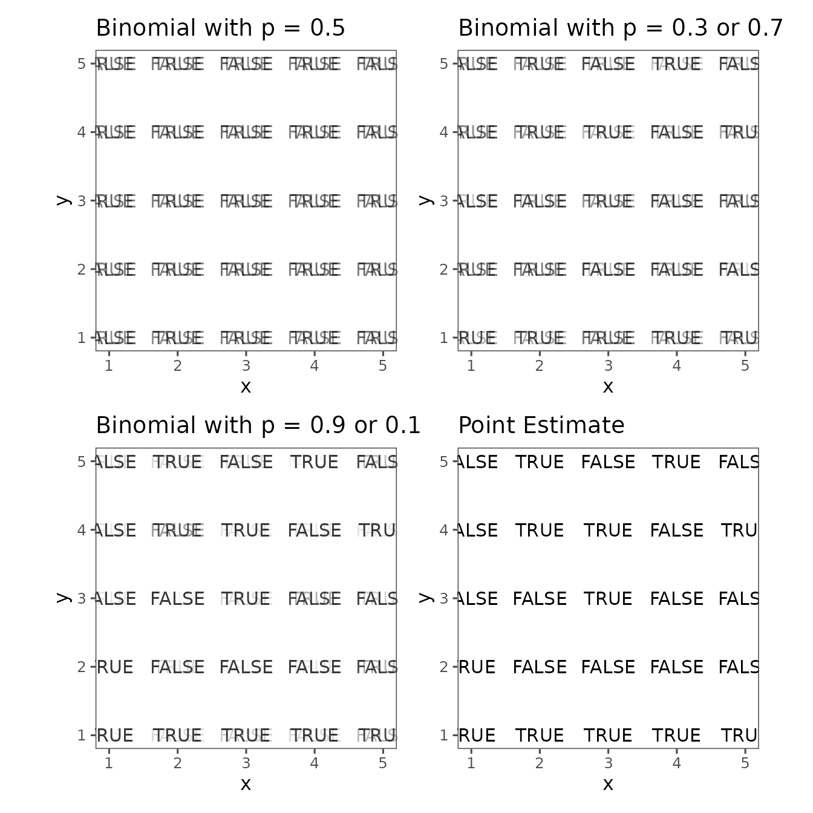
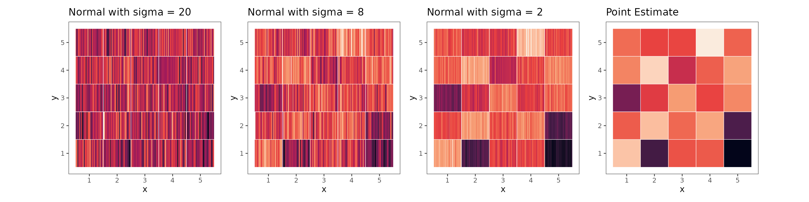
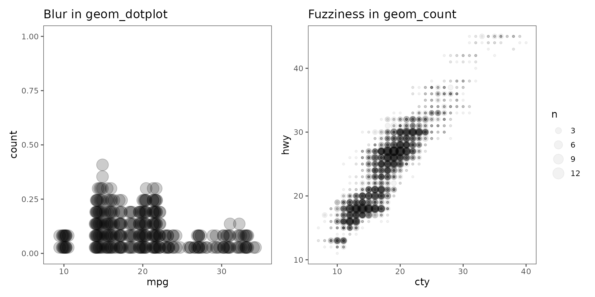

The ggdibbler philosophy
Twenty-five years ago Leeland Wilkinson said that the framework
described every statistics visualisation you could possibly make, and
and 25 years later it still seems like half the field of visualisation
doesn’t believe him. This section is here to correct this
misunderstanding. We will explain what we mean when we talk
about uncertainty visualisation and how the ggdibbler
approach came to be so flexible, powerful, and effective.
Since ggdibbler is so flexible, it has the ability to
generate a lot of graphics, many of which the authors of this
package have never seen before despite writing the software. Some of
these graphics already exist in the literature, and some don’t. If any
plot that ggdibbler makes looks familiar to you, it is due
to it being a subset of the signal suppression philosophy, rather than
through any conscious choices by us.
How ggdibbler works
As powerful as the ggdibbler package is, the actual
implementation is shockingly simple. The entire package could be a
single R file if we could have implemented it as a layer extension, but
the ggplot2 team do not export it, so here we are. The main
brunt of the package is literally three very simple operations.
- It takes your distribution variables and does n resamples
(controlled by
timesin the package) - It then groups by the interaction of the usual
ggplot2groups anddrawID(an ID number for the draw each value comes from) - It feeds this altered data through the ggplot pipeline you specified in your code (i.e. scale, stat, position, geom, coord, and theme)
These three components each answer a related question about how we want to quantify/visualise our data.
- Statistic nesting: What is the quantified representation of your distribution (e.g. samples, quantiles, etc)?
- Grouping structure: Do you want to visualise your uncertainty as signal (group by the distribution) or as noise (group by the draws)
- Position nesting: How are managing you managing the over plotting
created by replacing a single value with a large sample of values
(e.g. layering and setting
alpha < 1, using aposition_dodge, etc)?
The entire package is made by nesting the already existing grammar.
There is exactly one new feature we implemented that is not a
variation of what was already in ggplot and that is the
position_subdivide based on the Vizumap’s pixel map. The
only reason we had to implement that was because
position_dodge doesn’t work on SF objects or polygons
(although we think they should). Three parts of the grammar that needed
to be nested to implement ggdibbler, these are:
- A nested scale that scales the domain of the distribution while keeping it a random variable
- A nested statistic that takes draws from your distribution to represent it as visible data
- The nested position adjustment that is used to separately control the overplotting in the original plot and the over plotting in the from the sample.
Choosing to nest the scale, stat, and position might seem like an odd
choice, but that seemed to be the minimum number of nestings to get
ggdibbler to work as intended.
As ggplot is build for a nested grammar (with it’s parent/child
ggproto system) making the nested elements was rather straight forward,
although it was far too tedious to implement it with every stat, scale,
and position. So even within this subset of grammar elements
ggdibbler does not implement a full nested version of them.
The package would be greatly expanded by a full nested positioning
system and having a quantile variation of all the
stat_*_sample functions, but these features will take time.
This is also not the limit of where we could take this idea.
Theoretically we could also nest recursively (i.e. nest a random
variable inside a random variable and plot it with a position nested
inside a nested position). A random variable nested inside a random
variable is actually how you could make a ggdibbler version
of a ggdist graphic, but this is all beyond the current
scope of the package.
What is uncertainty visualisation?
Gather around children and let us tell you the philosophical underpinnings of our uncertainty visualisation package. The long version of the approach (which is actually think it is a good read despite being a paper) is written up in the a preprint here. A shorter version of it was given as a talk at UseR!2025 available here. The cliff notes version of these explanations is what makes up this section.
Exactly “what” uncertainty visualisation is, seems to be hard to pin down. There are two competing philosophies of uncertainty visualisation.
- Uncertainty visualisation is any visualisation of an uncertainty statistic. This can be a variance, error, density function, probability, standard error, etc.
- Uncertainty visualisation is a function of an existing graphic, where uncertainty is integrated into the plot in such a way that it prevents us from taking away false or misleading signals.
The difference between these philosophies is exactly what we are drawing inference on. If we are trying to understand something about the uncertainty or random variable itself, then the “signal” we are trying to extract from our graphic is the uncertainty information, so should opt for approach (1). If we are trying to draw inference on a different statistic and we want to see how the uncertainty in our observations increase of decrease the legitimacy of that take away, then we want to visualise uncertainty as noise and should opt for approach (2).
This distinction can be difficult to wrap your head around and often
uncertainty visualisation researchers mix and match the two approaches
without even realising it. To help you understand the difference, look
at the two density visualisations below. If we feed a vector of
uncertain values into a geom_density function what kind of
visualisation should it spit out? Are we interested in the uncertainty
of each individual cell or are we only interested in the uncertainty as
a collective and want to see how it changes the plot that would have
been made, had we fed in point estimates instead?
To show you the difference between these two approaches, we created
the plots below. Both plots ask the same question: If you pass a vector
of 15 distributions into a geom_density, what should it look like?. Do
you want to see each individual distribution or do you only care about
each individual distribution insofar as they impact the density of the
vector? If you are interested in each distribution you are visualising
uncertainty as signal and should use ggdist, if you only
care about the impact on the vector density, you are visualising
uncertainty as noise and should use ggdibbler.

We are not particularly interested in visualising uncertainty as
signal, it is already covered by ggdist and other packages.
The questions uncertainty as signal visualisations seek to answer are
largely about behavioural/psychological effects and it is unclear if
there are any visualisation specific questions for the field to answer.
Additionally, calling these visualisation “uncertainty visualisations”
implies that we should define a plot by its underlying statistics,
something we don’t do for any other type of statistic (e.g. central
measures or extreme values) so it is unclear why this approach was taken
for uncertainty. Regardless, it is not what ggdibbler
does.
Unlike visualising uncertainty as signal, visualising uncertainty as noise does pose an interesting visualisation question. Specifically it asks “how do we translate statistical validity into something we can see with our eyes”. Discussions around visualising uncertainty as noise often seem to believe that we should design visualisations such that signals with high certainty (i.e. statistical validity) should be visible, while signals with low uncertainty should be invisible (or at least harder to see). That is, the statistical validity should translate to perceptual ease.
We decided to call this goal “signal suppression” in reference to one of the few papers that seemed to consistently apply the “visualising uncertainty as noise” philosophy, Value Supressing Uncertainty Palettes. The only reason we didn’t call it value suppression, is because we are not actually suppressing any individual values, but rather the “plot level” take away.
This signal suppression philosophy implies three things about uncertainty visualisation. First, that the “units” of an uncertainty visualisation are distributions; second that uncertainty visualisations are random variables with limiting statistics; and finally that the integrations of the uncertainty should “interfere” with the signal we take from the plot. The rest of this section will investigate each of these ideas in more detail.
Random variables as “units” in distributional
For a plot to incorporate “uncertainty” the said uncertainty must come from…. somewhere. So where is it coming from? The implication is that the “data” that is fed into an uncertainty visualisation is not standard deterministic data points but rather, random variables. That is to say, instead of each cell being a single value represented by a number, it is a single random variable represented by a distribution.
We implement this structure using distributional, and we
give some details on how to use it in the getting started vignette, this
section is going to focus on why we sue distributions instead of an
estimate and it’s standard error which is more common in uncertainty
visualisation literature.
During the 2024 EBS End of Year BBQ I asked Mitch if he would be
willing add a estimate/standard error option to distributional. He
looked at me with a kind of “???” face (in hindsight, a very valid
response) and made several points that fully convinced me
ggdibbler should only accept distributions. While this
might sound like he was just trying to plug his software, the points
were very legitimate. This section is basically a summary of that
conversation and I think it is worth a read if you think you should be
able to pass an estimate and its standard error to an uncertainty
visualisation.
Only allowing distributions may feel like a restrictive choice, but
it is actually far more freeing than any alternative. Every single time
you make a plot in ggdibbler, you must draw samples
some distribution. We don’t care what that distribution is, but
it must be a distribution. If I removed the requirement for you
to pass a distribution, I would still need to sample from a
distribution, so what exactly am I supposed to sample from? Do you want
us us run around our neighbourhoods asking passer-bys to shout numbers
at us that “feel about this close” to your estimate? Being
ignorant to the distribution you are drawing information from
does not mean you aren’t drawing from a distribution.
You might argue that you can “just default to a normal distribution”
but it is arguably more annoying (and more confusing) to pass
aes(colour= c(estimate = mu, st_error = sigma)) instead of
aes(colour = dist_normal(mu, sigma)) to your plot. If you
want ggdibbler to just default to a normal distribution,
you can just default to a normal distribution.
The reality is, the estimate and standard error option is more
conceptually convoluted, harder to read, less transparent in what it is
doing, gives you less control, and it takes longer to type. If
you read this and would still prefer a standard error and an estimate
over a distribution, I suspect you are looking to obfuscate your
analysis from yourself, and I don’t think good software will assist you
in that. If you want to live in delusion, fine, but
ggdibbler won’t help you do it.
Uncertainty visualisations as random variable
If we accept that the units of an uncertainty visualisation are random variables, then visualisation is a function of random variables, and therefore a random variable in of itself. If it is some kind of estimate, then that means it should have some statistical properties such as limiting distirbutions, bias/variance trade off, etc. This section is about how we achieve these properties.
When discussing “normal” random variables, we often discuss the point prediction as the “end result”, but the uncertainty visualisation conversation seems to occur in the opposite direction. We frame the uncertainty as something that needs to be added “back in” to the point prediction. If you understand uncertainty as a random variable, this framework is rather nonsensical. It would be equivalent to giving a statistician a point estimate and asked them to “add the uncertainty back in”. The reality is, it isn’t possible to do and you shouldn’t have dropped the uncertainty in the first place.
While you cannot “add uncertainty” back into a point estimate, it is
true that every uncertainty visualisation has a point estimate
counterpart. That visualisation is not the starting point, but the
limiting statistic of an uncertainty visualisation. Basically, we are
looking at the continuous mapping theorem for visual statistics, which
would certainly be an interesting property for our visualisation to
have. As the variance in your random variable drops to zero and your
distribution approaches some point estimate, the uncertainty
visualisation should also approach the visualisation of said point
estimate. This approach also works for convergence to another random
variable, but this would require comparing ggdibbler to
ggdibbler, which is not as useful of a frameowork for
validating the uncertainty visualisaitons.
To formalise this a bit more, lets say that is a series of random variables, and is a constant such that . Additionally let be the visualisation function that translates our data to a statistical graphic (be it random variable or not). Then our visualisation approach obeys continuous mapping theorem if .
Now, we would argue that the purest way to check convergence in a visualisation is not actually a formal maths proof but…um… just looking at it? As that is the final level of computation, looking at it with your eyes. If you are unable to tell the difference between the two graphics, then I would argue that you have convergence in visual statistics.
Achieving this continuous mapping property is also why we needed to
implement the nested position system. The nested scale and statistic are
required for us to pass in distributions and represent them as samples,
but these two elements alone are not sufficient to achieve the
continuous mapping property. You can see why in the example below, where
he show that the standard ggplot2 position is insufficient
to capture the random variable’s grouping structure.
set.seed(10)
catdog <- tibble(
DogOwner = sample(c(TRUE, FALSE), 25, replace=TRUE),
CatOwner = sample(c(TRUE, FALSE), 25, replace=TRUE))
random_catdog <- catdog |>
mutate(
DogOwner = dist_bernoulli(0.1 + 0.8*DogOwner),
)
p1 <- ggplot(catdog, aes(DogOwner)) +
geom_bar_sample(aes(fill = CatOwner),
position = position_dodge(preserve="single"))+
theme_few() +
theme(legend.position="none", aspect.ratio = 1)+
ggtitle("ggplot: dodge")
p2 <- ggplot(random_catdog, aes(DogOwner)) +
geom_bar_sample(aes(fill = CatOwner), times=30,
position = "dodge_dodge") +
theme_few() +
theme(legend.position="none", aspect.ratio = 1)+
ggtitle("ggdibbler: dodge_dodge")
p3 <- ggplot(random_catdog, aes(DogOwner)) +
geom_bar_sample(aes(fill = CatOwner), times=30,
position = position_dodge(preserve="single")) +
theme_few() +
theme(legend.position="none", aspect.ratio = 1)+
ggtitle("ggdibbler: dodge")
p3 <- ggplot(random_catdog, aes(DogOwner)) +
geom_bar_sample(aes(fill = CatOwner), times=30,
position = position_dodge(preserve="single")) +
theme_few() +
theme(legend.position="none", aspect.ratio = 1)+
ggtitle("ggdibbler: dodge")
p1 | p3 | p2
The continuous mapping property should always holds regardless of
what random variable you are mapping, or how it is represented. From
what we have seen, this property has been very consistent in
ggdibbler. It should always work regardless of which
aesthetic you map your variables to (if you make a plot where you
believe it doesn’t, please let us know with a github issue). Below are
two examples that illustrate this principle. The text plot consists of
deterministic x and y values, but a random TRUE/FALSE value. When the
variance is high we cannot tell the difference between true and false as
they are literally a 50/50 coin flip, but as the variance of each random
variable drops to 0, the visualisation gets easier to read and it
approaches its ggplot2 deterministic counterpart.
set.seed(10)
textdata <- expand_grid(x = c(1,2,3,4,5), y= c(1,2,3,4,5)) |>
mutate(
z0 = sample(c(TRUE, FALSE), 25, replace=TRUE)
) |>
mutate(
z1 = dist_bernoulli(0.1 + 0.8*z0),
z2 = dist_bernoulli(0.3 + 0.4*z0),
z3 = dist_bernoulli(0.5),
)
textplot <- function(var, alpha){
ggplot(textdata, aes(x=x, y=y, lab=get(var))) +
# ggplot(textdata, aes(x=x, y=y, lab=get(var))) +
geom_text_sample(aes(label = after_stat(lab)),
size=4, alpha=alpha, times=30) +
scale_colour_viridis_d(option="rocket") +
#scale_colour_manual(values = c("steelblue", "firebrick")) +
theme_few() +
theme(aspect.ratio = 1, legend.position = "none")
}
p0 <- textplot("z0", 1) +
ggtitle("Point Estimate")
p1 <- textplot("z1", 0.05) +
ggtitle("Binomial with p = 0.9 or 0.1")
p2 <- textplot("z2", 0.05) +
ggtitle("Binomial with p = 0.3 or 0.7")
p3 <- textplot("z3", 0.05) +
ggtitle("Binomial with p = 0.5")
(p3 | p2 | p1 | p0)
In the second example, we use a geom_tile and map the
uncertain variable to colour. We notice the same trend of the
visualisation approaching it’s limiting statistic, the
ggplot2 counterpart.
tiledata <- expand_grid(x = c(1,2,3,4,5), y = c(1,2,3,4,5)) |>
mutate(
z0 = rnorm(25, 0, 10)
) |>
mutate(
z1 = dist_normal(z0, 2),
z2 = dist_normal(z0, 8),
z3 = dist_normal(z0, 30),
)
p5 <- ggplot(tiledata, aes(x=x, y=y)) +
geom_tile(aes(fill=z0), times=30) +
geom_tile(colour="white", fill=NA) +
theme_few() +
scale_fill_viridis_c(option="rocket") +
theme(aspect.ratio = 1, legend.position = "none") +
ggtitle("Point Estimate")
#> Warning in geom_tile(aes(fill = z0), times = 30): Ignoring unknown
#> parameters: `times`
p6 <- ggplot(tiledata, aes(x=x, y=y)) +
geom_tile_sample(aes(fill=z1), times=30) +
geom_tile(colour="white", fill=NA) +
theme_few() +
scale_fill_viridis_c(option="rocket") +
theme(aspect.ratio = 1, legend.position = "none") +
ggtitle("Normal with sigma = 2")
p7 <- ggplot(tiledata, aes(x=x, y=y)) +
geom_tile_sample(aes(fill=z2), times=30) +
geom_tile(colour="white", fill=NA) +
theme_few() +
scale_fill_viridis_c(option="rocket") +
theme(aspect.ratio = 1, legend.position = "none") +
ggtitle("Normal with sigma = 8")
p8 <- ggplot(tiledata, aes(x=x, y=y)) +
geom_tile_sample(aes(fill=z3), times=30) +
geom_tile(colour="white", fill=NA) +
theme_few() +
scale_fill_viridis_c(option="rocket") +
theme(aspect.ratio = 1, legend.position = "none") +
ggtitle("Normal with sigma = 20")
(p8 | p7 | p6 | p5)
Therefore, every ggdibbler visualisation should have a
ggdplot2 version, that represents its limiting statistic
(or specifically what the plot would approach as the variance of the
random variable approaches zero). This is subtly communicated in the
package using the code syntax. The code of a ggdibbler plot
and it’s deterministic limit will be identical, except you replace
geom_* with geom_*_sample. If you feed values
into geom_*_sample that are deterministic (i.e. random
variables with a variance of 0) you will also get the same
ggplot2 visualisation. This limiting property is also
conveyed using the examples which always present in the
ggdibbler documentation alongside their ggplot
counterpart.
Not only does every ggdibbler plot have a
ggplot2 counterpart, but the reverse is also true. We tried
to communicate this by replicating the ggplot2
documentation exactly as it appears in ggdibbler. Most of
it is cut for the sake of computation time (we are technically replacing
every example with two examples) but when testing the package we
replicated every ggplot2 example.
Visual interference and emergent aesthetics
The final element of the ggdibbler approach is the idea
that the uncertainty should interfere with your ability to read
the plot.
For invalid signals to become invisible, you must give your noise the ability to interfere with your reading of the plot. This is the opposite approach we typically have when mapping variables. Usually, when plotting two variables, we want the second variable not to interfere. If we are plotting height and age, we don’t want values that are particularly high on age to have an impossible to read height. However, that desire for visual independence is born from variable independence. This assumption no longer holds in the case of uncertainty and estimate. In the case of an estimate and it’s uncertainty the variables aren’t even different variables, they are two parameters of the same distribution.
Samples allow us to see a distribution as a single variable, rather
than as two disjoint variables. Not only does this give us the
interference we are looking for but it also allows us to keep the same
scales as the point estimate. Technically quantiles would also fit the
bill but implementing those in ggdibbler is a future
project. This obviously means that ggdibbler never actually
controls or maps any special uncertainty aesthetics, however when
scrolling through the documentation you will notice that they still
appear. The package is full of cases where uncertainty appears as blur,
transparency, thickness, fuzziness or some other commonly referenced
uncertainty aesthetic, but none of them are directly mapped by us, so
where are they coming from?
This fact implies that some aesthetics are “emergent” aesthetics, as
they can be generated through the combination of other mappings, while
some aesthetics are primary aesthetics and will only appear in our plot
if directly mapped. Any general investigation into primary vs
secondary/emergent aesthetics is beyond the scope of this package but we
have noticed some interesting variations when making
ggdibbler. For example, blur and fuzziness seem to have an
unexpected distinction. It appears as though blur is the combination of
transparency and uncertaity in position, while fuzziness is the
combination of transparency and uncertainty in size. Below are two
examples from the ggdibbler documentation that highlight
this difference.
# examples from ggdibbler
p1 <- ggplot(uncertain_mtcars, aes(x = mpg)) +
geom_dotplot_sample(binwidth = 1.5, alpha=0.2) +
theme(aspect.ratio = 1)+
theme_few() +
ggtitle("Blur in geom_dotplot")
p2 <- ggplot(uncertain_mpg, aes(cty, hwy)) +
geom_count_sample(alpha=0.05, times=30) +
theme(aspect.ratio = 1)+
theme_few() +
ggtitle("Fuzziness in geom_count")
p1 + p2
The most facinating thing about this is that the emerging aesthetics
feature is what allows ggdibbler to convey multiple sources
of uncertainty at once in a single graphic. Blur makes it more difficult
to read the position of the aesthetics and it is created by uncertainty
in position. Fuzziness makes it difficult to see the size of the
variable, and it is generated from uncertainty in the size. Blur does
not seem to interfere with our ability to see the size, and fuzziness
does not seem to interfere with our ability to read position. This could
turn out to be untrue if tested in a perceptual study, but seems to be a
consistent fact when looking at the examples generated for
ggdibler.
It is important to keep the emergent aesthetics in mind when using
ggdibbler, as explicitly plotting variables to any of the
emergent aesthetics will interfere with the signal suppression process.
It is not uncommon for uncertainty visualisation software to explicitly
map variables to blur, fuzziness or transparency. While this seems like
a sensible approach, these emergent aesthetics throw a bit of a wrench
into this approach. If we have three variables, and one is mapped to
transparency, another to position, and a third to some blurring
aesthetic, then the manually mapped blur will interfere with the
emerging blur (and vice-versa). While we have expressed a desire for
interference in uncertainty visualisation, we want to make it explicit
that the interference should be coming from the variable, not properly
independent variables.